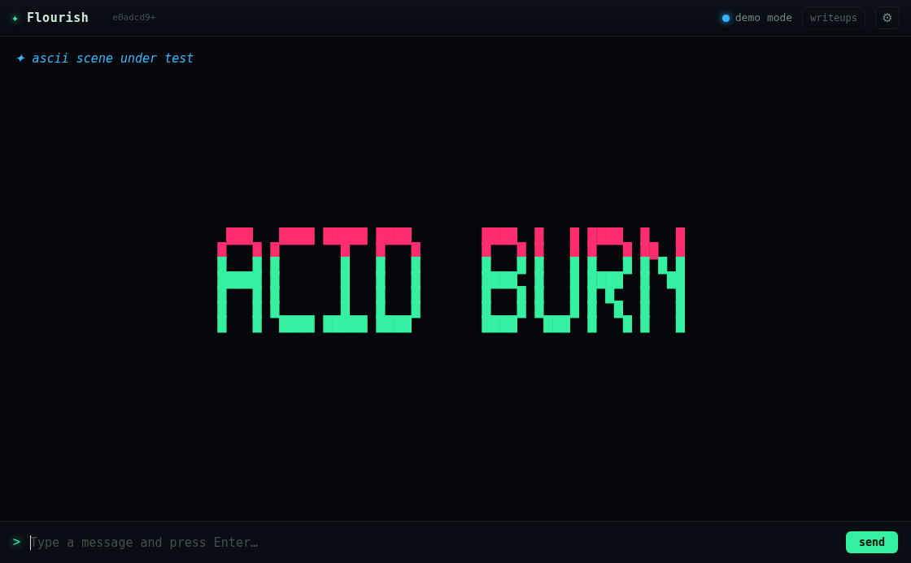
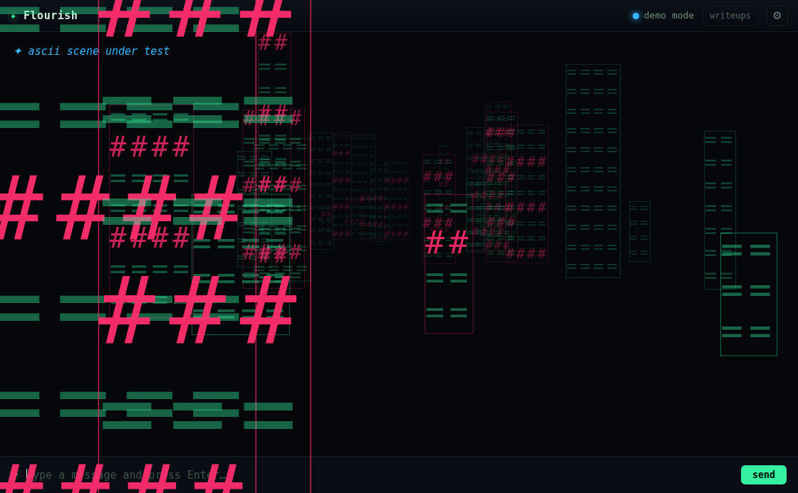
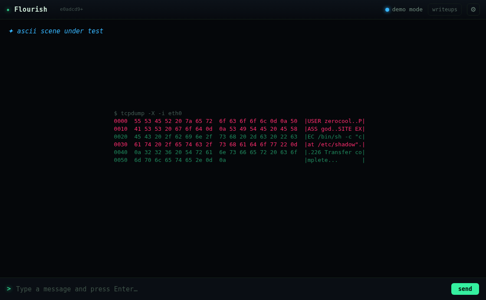
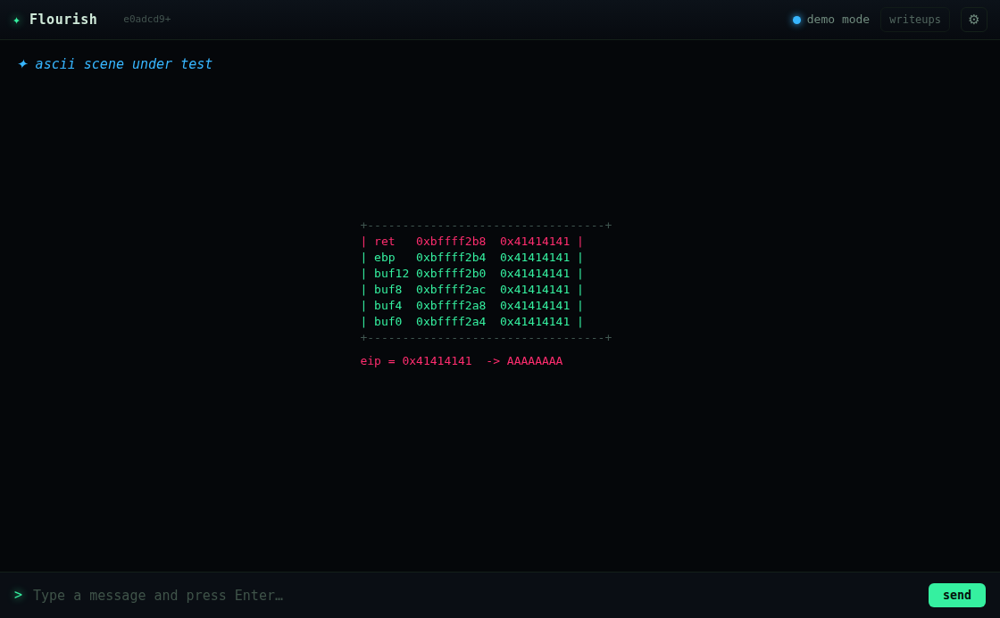
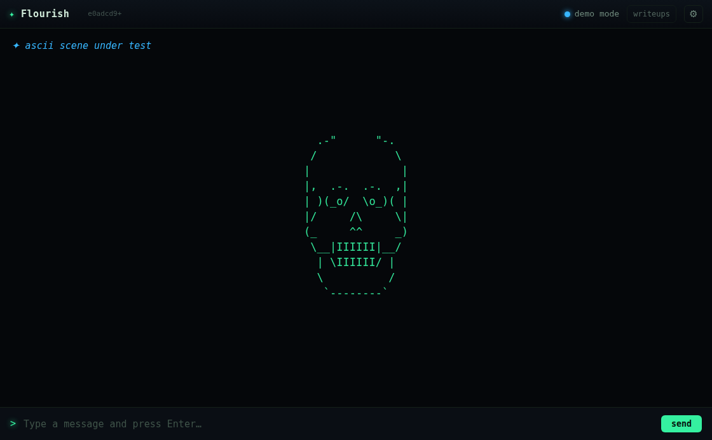
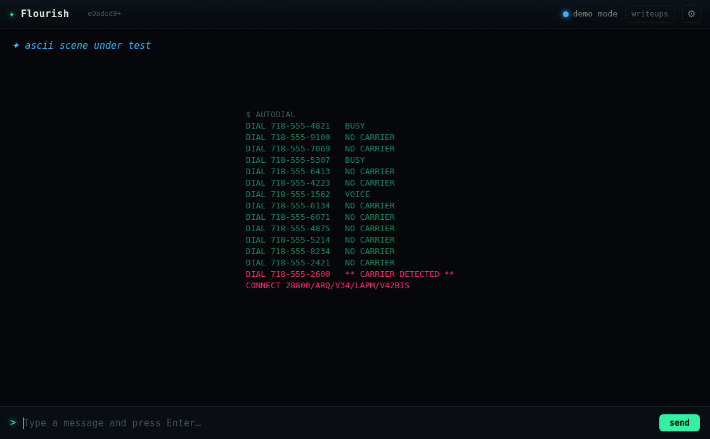

"come up with 10 more hackery-type tech effects. take cues from 'hackers' movie, use ascii art" — "and implement them"
Ten new point effects: gibson, wardial, crack, banner,
sniffer, trace, daemon, portscan, skull,
overflow. This writeup is not really about building them. It's about the fact that
206 passing tests, ten correct planners and ten beautiful screenshots agreed the work was done,
and three separate things were still wrong — one in the feature, two in the tools built to
check the feature.
One array, not ten fields. Every other full-screen effect owns a this.<name>
that must be remembered in four places: _busy, _update, _draw, and
fx-shots' hand-maintained reset(). The README already records the cost of missing
the fourth — "that effect quietly stacks up across every later shot". Ten new fields would have been
ten chances to pay it. All ten scenes live in this.ascii: one line in each place, and an
eleventh scene costs no wiring at all. fire() dispatches the family off the
ASCII_EFFECTS set, so there is no case to forget either.
Planned pure, drawn impure. Every fact a scene contains — the hexdump's bytes, the
traceroute's latencies, the stack's addresses, the banner's raster — comes out of a seeded pure
function in flourish.js. npm test covers pure modules; a scene generated inside a
canvas draw call can only ever be checked by looking at a picture, and this repo has already shipped
that bug twice with pictures attached.
~40 tests, every scene at seven fixed seeds. They're written against invariants that would still be violated in a frame that looked perfect:
One of these caught a real bug on the first run. sniffer flagged its credential
lines by testing each 16-byte row's own gutter — but a 16-byte window splits
Authorization about as often as not, so on two of three payloads nothing was flagged at
all and the scene drew perfectly with the credential in the same colour as everything else. Marks are
now matched against the whole payload and intersected with each row.
Eight deliberate breakages, one at a time:
| Sabotage | Caught? |
|---|---|
| sniffer credential marking gutted | yes |
| wardial never CONNECTs | yes |
| crack locks backwards | yes |
| 2600/31337 left to the rng | yes |
| overflow stops inside the buffer | yes |
ascii dispatch cut out of fire() | yes |
fx-shots reset line forgotten | yes |
| banner glyph 'A' blanked entirely | NO — 0 failures |
The last one is why sabotage is worth the time. The per-phrase ink threshold passed happily:
HACK THE PLANET has plenty of ink left without its As, and on screen a banner missing one
letter is a well-formed rectangle of the right size in the right place. There is no picture that gives
it away. It's now asserted per glyph, and the sabotage fails.
Every one of those tests calls a planner. _drawAscii could have returned on its first
line and all 206 would have stayed green. So tools/ascii-probe.js wraps the real 2D
context's fillText/strokeRect before any effect fires and counts what
actually lands — an oracle that never asks a scene about itself.
It found the feature bug the tests structurally could not:
scene planned painted boxes off-screen own content reaped gibson 36 72489 2988 1883 (n/a) yes crack 13 1190 0 0 0/1 yes
gibson was making 1,883 draw calls a sample off the edge of the screen — culled per
tower, but not per glyph. Culling per glyph took it from 84,198 draws (3,175 invisible) to 53,146 (zero),
for an identical picture, on the heaviest effect in the engine.
crack's 0/1 was not a bug. crack draws one character per
fillText, so an oracle searching for the whole target string could never match. The probe
now takes a single frame's worth of single-glyph draws, in order. Same for banner, which
reported exactly 7× its expected ink — sleeping 120ms and reading the tap gathers however
many frames happen to fit. Frame boundaries are now taken by wrapping _draw.
Sabotaged back the other way, the fixed oracle bites hard:
=== crack never locks (const locked = false) === crack 8 1329 0 0 NO yes wanted "ACIDBURN" got "SY^GHTZ^" BROKEN SCENES: 1 === _drawAscii returns immediately === actually painted to the canvas: 0/10 BROKEN SCENES: 10
2,521 glyphs of perfectly busy nothing. That is the shape of every bug this repo has shipped.
With the cull in place gibson still reported ~400 off-screen draws, varying run to run.
Firing gibson alone reported zero. Two red herrings fell out before the real one:
getContext('2d') returns the same context
object every call, so a fresh engine per scene shares one context with the renderer's own and with every
tap installed before it. The app's ambient effects were being counted as the scene's. Draws are now
attributed to the engine that made them.x = -80 is half on screen and entirely intentional. So the check
was made to measure against the glyph's own size, read off ctx.font.Neither fixed it. The samples did:
RAW FONT: [{"x":831,"y":-33,"sz":13,"font":"126.025px ui-monospace, ..."}]
The real font was 126px and the probe read 13 — its fallback, on every single call.
The size regex lives inside a template literal on its way through executeJavaScript, where
\d is not a valid escape and degrades silently to a bare d. The pattern
became (d+(?:.d+)?)px, matched nothing, and fell back to 13 forever — making the
threshold ~10× too tight and inventing ~400 phantom misses on a scene that was drawing correctly.
The engine cull was right the whole time. I came within one edit of "fixing" it. The fallback is now loud rather than silent: an unparsed font fails the run instead of guessing.
fixed regex, real code: gibson off-screen = 0 ALL TEN SCENES PAINT WHAT THEY PLAN: yes fixed regex, cull removed: gibson off-screen = 5241 BROKEN SCENES: 1
npm test 206/206 xvfb-run -a electron tools/ascii-probe.js ALL TEN SCENES PAINT WHAT THEY PLAN: yes
Full probe output: probe-green.txt · sabotage runs: probe-sabotage.txt
fps under software GL (the README's pessimistic floor). gibson is now the heaviest thing
in the engine and sits at budget with nothing spare:
gibson 121 frames in 2003ms = 60.4 fps (~840 fillText/frame)
skull 174 frames in 2004ms = 86.8 fps
portscan 182 frames in 2003ms = 90.9 fps
banner 228 frames in 2003ms = 113.8 fps
nova 187 frames in 2005ms = 93.3 fps (for scale)

banner — a 5x7 block font rasterised to full-block glyphs. The reveal rate is derived from the lifetime, not a constant: at a fixed 22ms/column, HACK THE PLANET (90 columns) finished assembling at ~68% of its life and faded immediately. The bloom lesson, which this repo documents and I walked into anyway.
gibson — the fixed pinhole projection. The first version divided the ground offset by a constant as well as by z, collapsing 26 units of depth into ~100px of screen: every tower landed in one band on the horizon. It painted, on-screen, in its own glyphs, and the probe called it green. Only looking at it found this.
sniffer — PASS straddles rows 0000/0010, and both light. That's the cross-boundary fix; the original flagged neither.
overflow — the frame floods bottom-up until ret is 0x41414141.
skull — rezzes in scattered, not in reading order: it's an image, and an image that assembles left-to-right reads as text.
wardial — the carrier is always the last two lines, never one of the random ones.salvage lost time to exactly one shape of bug: a default that quietly stands in for a failed lookup. \d in a template literal is that bug in one character.